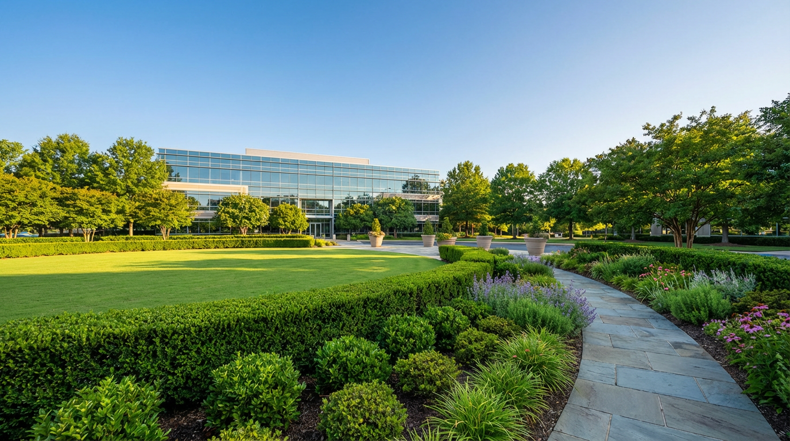
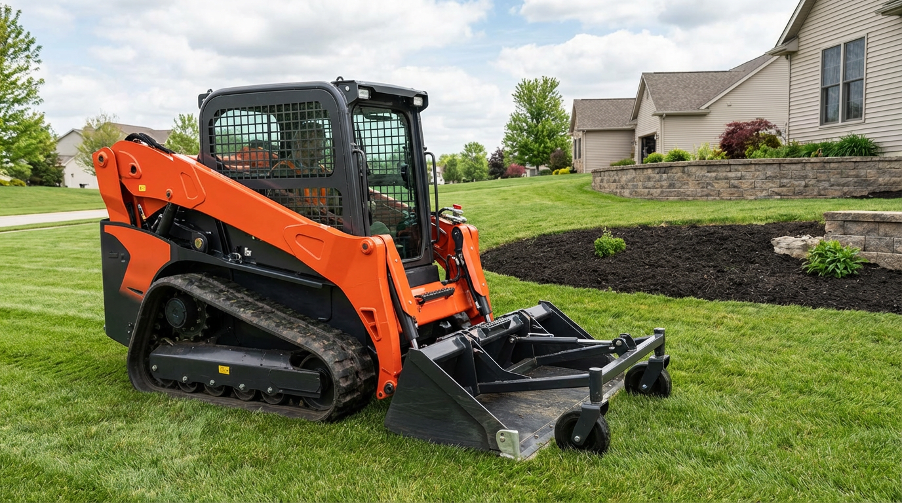

Landscaping companies rely on financing to purchase mowers, excavators, and equipment—and to cover fuel, materials, and seasonal payroll. Axiant Partners connects landscapers with lenders offering equipment financing, SBA loans, working capital, and more. Whether you run lawn care, hardscape, or full-service landscaping, we match you with financing that fits your operation and seasonal cash flow.
Industry Overview
Landscaping businesses face high upfront costs for mowers, excavators, skid steers, and trailers. Seasonal demand—spring and fall peaks—creates cash flow gaps between equipment purchases, material costs, and customer payments. Many landscapers need financing to add or replace equipment without draining reserves. Working capital helps cover fuel, mulch, plants, and labor during the busy season when payroll and material costs spike.
Commercial mowers and excavators can cost $15,000–$80,000 or more per unit. Equipment financing and working capital loans help landscaping companies grow their fleet and manage seasonal expenses. SBA loans support longer-term needs like real estate (nursery, yard, shop) and business acquisition, while lines of credit provide flexibility for materials and payroll.

How Landscapers Use Financing for Their Business
Landscaping companies use financing for mowers, excavators, trucks, and seasonal cash flow. Many finance zero-turn mowers, skid steers, and mini excavators through equipment loans—preserving cash for fuel, materials, and payroll. Working capital helps cover mulch, plants, and labor during the busy spring and fall rush when costs spike before customer payments arrive. SBA loans support yard or nursery purchases, fleet expansion, or business acquisition.
Seasonal demand—strong in spring and fall, slower in summer and winter—makes financing especially useful. A lawn care company might use a line of credit to fund equipment and materials ahead of the busy season. A hardscape contractor might finance a new skid steer to take on larger projects. Whether adding mowers, trucks, or crews, landscapers use financing to scale with the seasons and grow the business.
Landscaping Business Financing Options
Landscapers need financing for mowers, trucks, materials, and seasonal payroll. Whether you're searching for landscaping equipment financing, lawn care business loans, or landscaping working capital, the right product depends on your use of funds and timeline.
Common Landscaping Equipment That Businesses Finance
Landscaping companies frequently finance mowers, excavators, and specialty equipment. Below are common types, typical cost ranges, and why businesses finance them.

Zero-Turn Mowers
Zero-turn mowers provide fast, efficient mowing for commercial lawns. New commercial models typically cost $6,000–$15,000 or more. Many landscapers finance zero-turns to add capacity or replace aging units without large upfront outlays.
How to finance a zero-turn mower
Commercial Mowers
Walk-behind and stand-on mowers handle tight spaces and residential properties. They typically cost $3,000–$12,000. Financing helps landscapers add mowers for crew expansion and route growth.
How to finance a commercial mower
Skid Steers
Skid steers handle grading, material handling, and attachments for hardscape and landscape projects. They typically cost $25,000–$75,000. Financing helps landscapers add versatile equipment for larger projects.
How to finance a skid steer
Mini Excavators
Mini excavators perform digging, trenching, and grading for hardscape, irrigation, and tree work. They typically cost $25,000–$60,000. Financing spreads the cost over the equipment's productive life.
How to finance a mini excavator
Stump Grinders
Stump grinders remove tree stumps after removal. Tow-behind and self-propelled units range from roughly $5,000 to $30,000 or more. Financing helps tree and landscape companies add stump removal services.
How to finance a stump grinder
Landscape Trailers
Dump and utility trailers haul mowers, equipment, mulch, and materials. Trailers typically cost $3,000–$25,000 or more depending on size and features. Financing helps landscapers add trailers for crew capacity.
How to finance a landscape trailerEquipment Financing Guides for Landscapers
Landscapers considering equipment loans often ask these questions. Our guides cover credit requirements, used equipment, rates, and approval timelines. For equipment-specific guides, see Equipment by Type. For a full overview, see Equipment Financing.
Apply for Landscaping Business Financing
Landscaping companies need financing that fits seasonal cycles and cash flow. Axiant Partners connects landscapers with lenders that offer equipment loans, working capital, SBA loans, and more. Submit your information once and we match you with programs suited to your business profile. Get matched with a lender or contact our team to discuss your needs.